13 גבולות של פונקציות
13.1 הגדרת הגבול של פונקציה + דוגמה
אם \(f(x)\) פונקציה שמוגדרת בסביבה של \(x_0\), ואם \(L \in R\)
אז נגיד כי הגבול של \(f(x)\) בנקודה \(x_0\) שווה ל-L, ונסמן זאת ע”י \(\lim_{x \to x_0} f(x) = L\)
אם לכל \(\varepsilon > 0\), קיימת \(\delta > 0\), כך שלכל x עבורם \(|x - x_0| < \delta\)
מתקיים \(|f(x) - L| < \varepsilon\)
תרשים: הגדרת הגבול לפי \(\varepsilon\)-\(\delta\) — רצועה אופקית \(L\pm\varepsilon\) ורצועה אנכית \(x_0\pm\delta\)
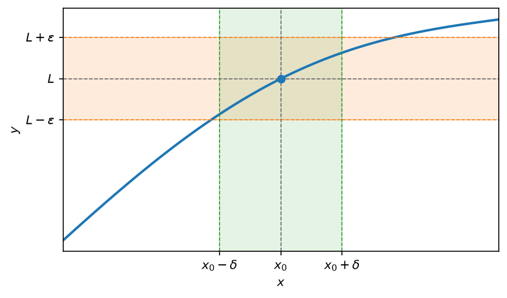
אם \(f(x)\) מוגדרת בסביבה נקובה של \(x_0\), אז \(0 < |x - x_0| < \delta\)
תרשים: גבול \(L\) בנקודה \(x_0\) שבה הפונקציה אינה מוגדרת — עיגול ריק על הגרף
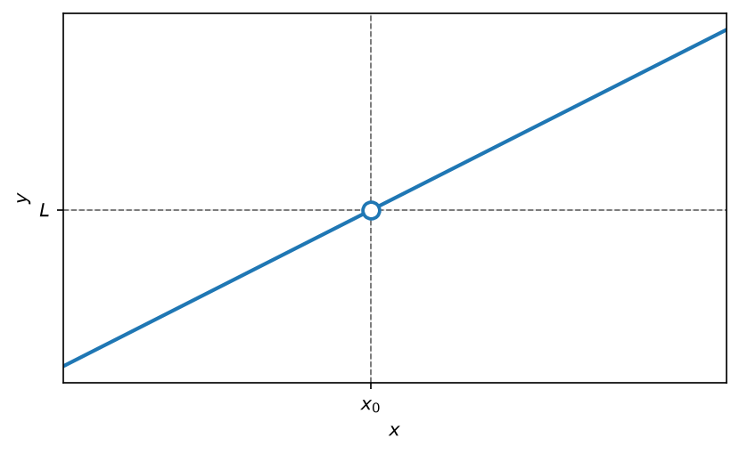
גבול של \(f(x)\) בנקודה \(x_0\), אינם תלוי באם הפונקציה \(f(x)\) מוגדרת ב-\(x_0\) בכלל ואיך היא מוגדרת ב-\(x_0\).
לדוגמא:
הראו כי \(\lim_{x \to 2}(x^2 + 1) = 5\)
פתרון לפי ההגדרה:
\(L = 5\), \(x_0 = 2\), \(f(x) = x^2 + 1\)
יהי \(\varepsilon > 0\), נחפש \(\delta > 0\) כך שלכל x המקיים \(|x - 2| < \delta\) יתקיים \(|(x^2 + 1) - 5| < \varepsilon\)
\[|(x^2 + 1) - 5| = |x^2 - 4| = |(x-2)(x+2)| = |x - 2| \cdot |x + 2| < \delta \cdot |x + 2| =\]
\[= \delta \cdot |x - 2 + 4| \leq \delta \cdot (|x - 2| + 4) < \delta \cdot (\delta + 4)\]
נרצה למצוא \(\varepsilon\) כך שיתקיים \(\delta \cdot (\delta + 4) < \varepsilon\)
מראש נחפש \(\delta < 1\): \(\delta \cdot (\delta + 4) < \delta \cdot 5 < \varepsilon\)
\[\delta < \frac{\varepsilon}{5}\]
לכן, לסיכום נבחר \(0 < \delta < min\{1, \frac{\varepsilon}{5}\}\)
13.2 משפט היינה
משפט היינה
אם \(f(x)\) מוגדרת בסביבה נקובה של \(x_0\), אז \(\lim_{x \to x_0} f(x) = L\) אם
ורק אם, לכל סדרה \(a_n \to x_0\) שמקיימת \(a_n \neq x_0\) מתקיים \(f(a_n) \to L\)
\[\lim_{x \to x_0} f(x) = L \iff f(a_n) \to L\]
לדוגמא:
עבור הפונקציה \(f(x) = x^2\), מהו \(\lim_{x \to 2} f(x) = \square\)
כלומר: \(f(x) = x^2\), \(x_0 = 2\), \(L = ?\)
פתרון:
ניעזר בהיינה- תהי \(a_n \to 2\) (כאשר \(a_n \neq 2\)) נבדוק האם ולאן מתכנסת \(f(a_n)\):
\[a_n^2 \to 4\]
ולכן לפי היינה הראנו
\[\lim_{x \to 2} x^2 = 4\]
דוגמא מטעית היינה:
הראו כי הגבול \[\lim_{x \to 0} \sin\left(\frac{1}{x}\right)\] אינו קיים.
תרשים: \(f(x)=\sin\left(\frac{1}{x}\right)\) — תנודות צפופות בקרבת הראשית
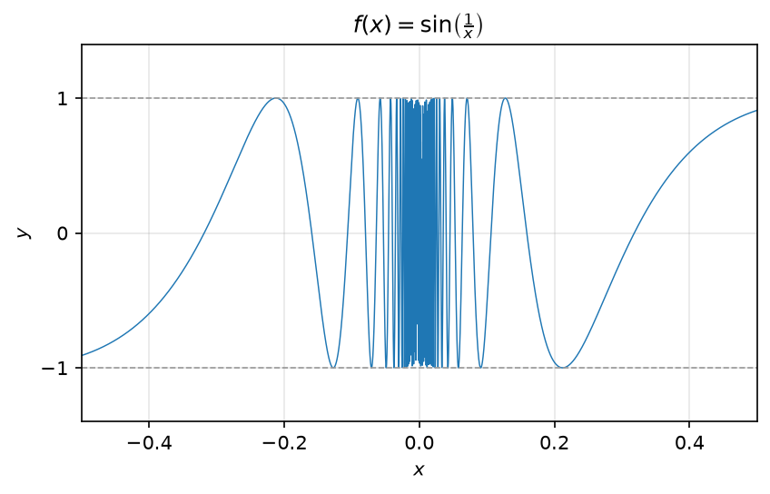
פתרון:
\[f(x) = \sin\left(\frac{1}{x}\right) \;,\; x_0 = 0\]
נחפש: \(a_n \to 0\) , \(b_n \to 0\) עבורן: \(f(a_n) \to \neq \to f(b_n)\)
ניקח: \[a_n = \frac{1}{\frac{\pi}{2} + 2\pi n} \to 0\] וגם \[f(a_n) = \sin\left(\frac{\pi}{2} + 2\pi n\right) = 1 \xrightarrow[n \to \infty]{} 1\]
וניקח: \[b_n = \frac{1}{0 + 2\pi \cdot n} \to 0\] וגם \[f(b_n) = \sin(2\pi n) = 0 \xrightarrow[n \to \infty]{} 0\]
ולכן \[\lim_{x \to 0} \sin\left(\frac{1}{x}\right)\] לא קיים
13.3 אריתמטיקה של גבולות
אריתמטיקה של גבולות
אם \(f, g\) פונקציות שמוגדרות בסביבה נקובה של \(x_0\)
ואם \(\lim_{x \to x_0} f(x) = L_1\), \(\lim_{x \to x_0} g(x) = L_2\)
אז מתקיים:
חיבור: \[\lim_{x \to x_0} (f(x) + g(x)) = L_1 + L_2\]
חיסור: \[\lim_{x \to x_0} (f(x) - g(x)) = L_1 - L_2\]
כפל: \[\lim_{x \to x_0} (f(x) \cdot g(x)) = L_1 \cdot L_2\]
חילוק (\(L_2 \neq 0, g(x) \neq 0\)): \[\lim_{x \to x_0} \frac{f(x)}{g(x)} = \frac{L_1}{L_2}\]
חזקה (רק כאשר \(L_1^{L_2}\) מוגדר): \[\lim_{x \to x_0} f(x)^{g(x)} = L_1^{L_2}\]
הוכחה של הכפל
נראה כי \(\lim_{x \to x_0} (f(x) \cdot g(x)) = L_1 \cdot L_2\)
נראה זאת בעזרת היינה: תהי \(a_n \to x_0\) סדרה המקיימת \(a_n \neq x_0\)
ולכן מהנתון, היינה אומר כי \(\lim_{x \to x_0} f(x) = L_1\) ולכן \(f(a_n) \to L_1\)
בדומה, ולפי היינה \(\lim_{x \to x_0} g(x) = L_2\), \(g(a_n) \to L_2\)
לפי אריתמטיקה של כפל סדרות, נסיק: \(f(a_n) \cdot g(a_n) \to L_1 \cdot L_2\)
\[\lim_{n \to \infty} (f \cdot g)(a_n) = L_1 \cdot L_2 \longrightarrow \lim_{x \to x_0} (f \cdot g)(x) = L_1 \cdot L_2\]
דוגמאות שימושיות
1) פונקציות מהצורה \(x^a\)
\(\lim_{x \to x_0} x^a = x_0^a\), כאשר \(a\) קבוע
כלומר: אם \(f(x) = x\) אז \(\lim_{x \to x_0} f(x) = x_0\)
למשל: \(\lim_{x \to 2} x^3 = 8\)
2) פונקציות מעריכיות
\(\lim_{x \to x_0} b^x = b^{x_0}\) כאשר \(b > 0\) קבוע
למשל: \(\lim_{x \to -3} e^x = e^{-3}\)
3) פונקציות טריגונומטריות
\[\lim_{x \to 0} \cos(x) = \cos(x_0) \quad , \quad \lim_{x \to 0} \sin(x) = \sin(x_0)\]
נוכיח כי \(\lim_{x \to x_0} \sin(x) = \sin(x_0)\) לפי ההגדרה:
יהי \(\varepsilon > 0\), נחפש \(\delta > 0\) כך שלכל \(x\) המקיים \(0 < |x - x_0| < \delta\)
יתקיים: \(|f(x) - L| < \varepsilon\)
\[|f(x) - L| = |\sin(x) - \sin(x_0)| = \left|2 \cdot \sin\left(\frac{x - x_0}{2}\right) \cdot \cos\left(\frac{x + x_0}{2}\right)\right| \leq 2 \cdot \left|\sin\left(\frac{x - x_0}{2}\right)\right| =\]
\[= 2 \cdot \left|\frac{x - x_0}{2}\right| = |x - x_0| < \delta\]
ולכן נבחר מראש \(0 < \delta < \varepsilon\)
לסיכום, הראנו שלכל \(\varepsilon > 0\), נבחר \(\delta = \frac{\varepsilon}{2}\) וכך הראנו שלכל \(x\) המקיים \(|x - x_0| < \delta\)
מתקיים: \(|\sin(x) - \sin(x_0)| < \varepsilon\)
אי שוויון חשוב לזכור: \(\sin: |\sin(t)| \leq t\) לכל \(t \in R\)
למשל: \(\lim_{x \to 0} \tan(x) = \lim_{x \to 0} \frac{\sin(x)}{\cos(x)} = \frac{\sin(x_0)}{\cos(x_0)}\) לכל \(x_0\) עבורו \(\cos(x_0) \neq 0\)
4) פונקציות לוגריתמיות
\(\lim_{x \to \infty} \log_a(x) = \log_a(x_0)\) כאשר \(a > 0\) קבוע וכאשר \(x_0 > 0\)
למשל: \(\lim_{x \to 4} \ln(x) = \ln(4)\) כי \(\ln(x) = \log_e(x)\)
13.4 משפט הסנדוויץ׳
משפט כלל הסנדויץ’
אם \(f, g, h\) פונקציות מוגדרות בסביבת הנקודה של \(x_0\)
ואם \(h(x) \leq f(x) \leq g(x)\) לכל \(x\) בסביבה נקובה של \(x_0\)
ו- \(\lim_{x \to x_0} h(x) = \lim_{x \to x_0} g(x) = L\)
תרשים: כלל הסנדוויץ’ — \(h\le f\le g\) והקצוות נפגשים בנקודה \(L\) מעל \(x_0\)

אם \(f,g,h\) פונקציות מוגדרות בסביבת הנקודה של \(x_0\)
ואם \(h(x) \leq f(x) \leq g(x)\) לכל \(x\) בסביבה נקובה של \(x_0\)
ו- \[\lim_{x \to x_0} h(x) = \lim_{x \to x_0} g(x) = L\]
תרשים: כלל הסנדוויץ’ — \(h\le f\le g\) הכלואות זו בזו ונפגשות בנקודה \(L\) מעל \(x_0\)
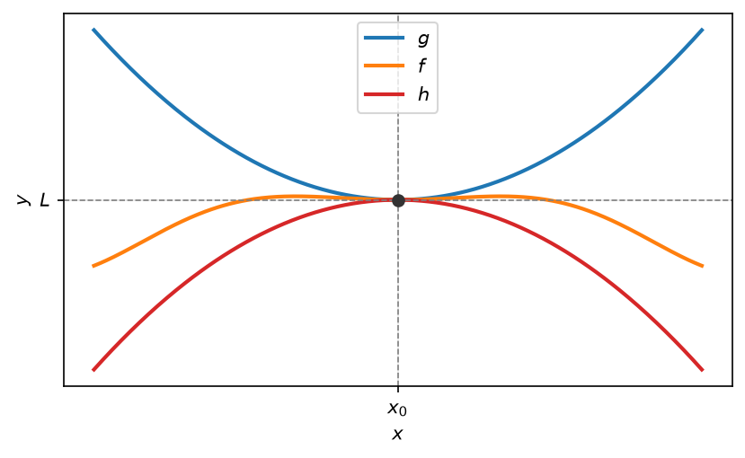
מסקנה מכלל הסנדוויץ’
אם \(f,g\) פונקציות שמוגדרות בסביבה מנוקבת של \(x_0\) , ואם \[\lim_{x \to x_0} f(x) = 0\] ואם \(g(x)\) חסומה בסביבת הנקודה המנוקבת \(x_0\) ,
אז: \[\lim_{x \to x_0} f(x) \cdot g(x) = 0\] “אפסה כפול חסומה”
לדוגמא:
חשבו את הגבול
\[\lim_{x \to 0} x \sin\left(\frac{1}{x}\right)\]
פתרון:
\[\lim_{x \to 0} x = 0\] והפונקציה \(\sin\left(\frac{1}{x}\right)\) חסומה בסביבה הנקובה \(0\), כי \(\left|\sin\left(\frac{1}{x}\right)\right| \leq 1\)
ולכן מ”אפסה כפול חסומה”, נסיק: \[\lim_{x \to 0} x \sin\left(\frac{1}{x}\right) = \boxed{0}\]
13.5 גבולות חד-צדדיים
אם \(f\) מוגדרת בסביבה מנוקבת ימנית של \(x_0\) , כלומר ב- \((x_0 \,,\, x_0 + \square)\)
אז נגיד כי \[\lim_{x \to x_0^+} f(x) = L\] אם לכל \(\varepsilon > 0\) קיימת \(\delta > 0\) ,
כך שלכל \(x\) המקיים: \(0 < x - x_0 < \delta\) . כלומר: \(x_0 < x < x_0 + \delta\) ,
ומתקיים \[|f(x) - L| < \varepsilon\]
אם \(f\) מוגדרת בסביבה מנוקבת שמאלית של \(x_0\) , כלומר ב- \((x_0 - \square \,,\, x_0)\)
אז נגיד כי \[\lim_{x \to x_0^-} f(x) = L\] אם לכל \(\varepsilon > 0\) קיימת \(\delta > 0\) ,
כך שלכל \(x\) המקיים: \(x_0 - \delta < x < x_0\) . כלומר: \(x \in (x_0 - \delta, x_0)\) ,
ומתקיים \[|f(x) - L| < \varepsilon\]
דוגמא:
האם קיים הגבול \[\lim_{x \to 1} \lfloor x \rfloor\]
תרשים: פונקציית הערך השלם \(f(x)=\lfloor x \rfloor\) — קפיצה בנקודה \(x=1\)
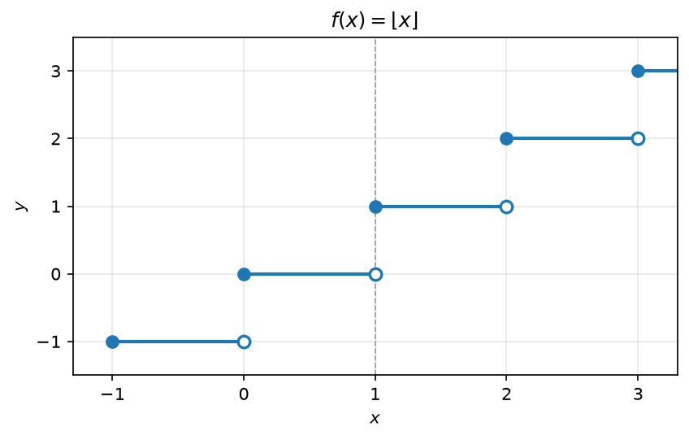
פתרון:
ניעזר בהיינה ונבחר: \[a_n = 1 + \frac{1}{n}\] המקיימת \(a_{n \to 1}\) וגם \(f(a_n) = 1 \xrightarrow[n \to \infty]{} 1\)
ניקח: \[b_n = 1 - \frac{1}{n}\] המקיימת \(b_{n \to 1}\) וגם \(f(b_n) = 0 \xrightarrow[n \to \infty]{} 0\)
לכן מהיינה, הגבול \[\lim_{x \to 1} \lfloor x \rfloor\] לא קיים.
דוגמא נוספת:
\[\lim_{x \to 0^+} \sqrt{x} = 0\]
תרשים: הפונקציה \(f(x)=\sqrt{x}\) והגבול החד-צדדי \(\lim_{x\to 0^+}\sqrt{x}=0\)
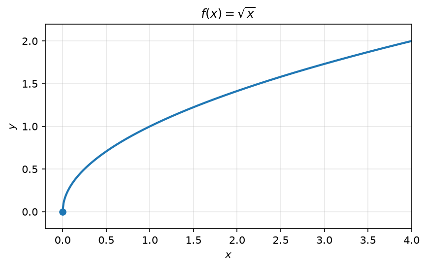
טענה 13.5.1.
אם \(f\) מוגדרת בסביבה מנוקבת של \(x_0\) , אז \[\lim_{x \to x_0} f(x)\] קיים ושווה \(L\)
\(\Updownarrow\)
\[\lim_{x \to x_0^+} f(x) = L = \lim_{x \to x_0^-} f(x)\]
בשביל להראות שגבול של פונקציה בנקודה לא קיים, מספיק להראות: \[\lim_{x \to x_0^+} f\] לא קיים.
אם \[\lim_{x \to x_0} f\] קיים, אז הוא יחיד.
דוגמא:
עבור הפונקציה \[f(x) = \begin{cases} x^2 + A \cdot x & x > 1 \\ 3x & x < 1 \end{cases}\]
עבור איזה \(A \in R\) הגבול \[\lim_{x \to 1} f(x)\] קיים?
תרשים: פונקציה מוגדרת בקטעים — \(3x\) משמאל ו-\(x^2+2x\) מימין, עם נקודה ריקה ב-\(x=1\)
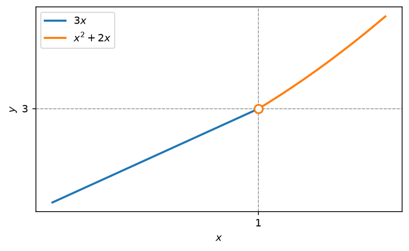
פתרון:
ננסה להבין מהו \[\lim_{x \to 1} f(x)\] ע”י מציאת הגבולות החד צדדיים של \(f\) בנקודה \(1\).
גבול מימין: \[\lim_{x \to 1^+} f(x) = \lim_{x \to 1^+} (x^2 + A \cdot x) = \underline{1 + A}\]
גבול משמאל: \[\lim_{x \to 1^-} f(x) = \lim_{x \to 1^-} 3x = \underline{3}\]
ולכן הגבול \[\lim_{x \to 1} f(x)\] קיים אם ורק אם: \[\underbrace{3}_{\text{גבול משמאל}} = \underbrace{1 + A}_{\text{גבול מימין}}\]
כלומר: \[\boxed{A = 2}\]
13.6 הגבולות ה״מופלאים״: \(\frac{\sin x}{x}\), \(\frac{1-\cos x}{x^2}\)
ניתן להשתמש בכל הגבולות הבאים:
\[\lim_{x \to 0} \frac{\sin(x)}{x} = 1 \qquad (1)\]
\[\lim_{x \to 0} \frac{1 - \cos(x)}{x^2} = \frac{1}{2} \qquad (2)\]
\[\lim_{x \to 0} (1 + x)^{\frac{1}{x}} = e \qquad (3)\]
\[\lim_{x \to 0} \frac{\ln(1 + x)}{x} = 1 \qquad (4)\]
\[\lim_{x \to 0} \frac{a^x - 1}{x} = \ln(a) \qquad (5)\] (\(a > 0\) קבוע)
\[\lim_{x \to 0} \frac{(1 + x)^a - 1}{x} = a \qquad (6)\] (\(a\) קבוע)
13.7 גבולות מופלאים נוספים: \((1+x)^{1/x}\), \(\frac{\ln(1+x)}{x}\), \(\frac{e^x-1}{x}\), \(\frac{(1+x)^a-1}{x}\)
הסבר ל-(3)
ממשפט אוילר: \[\lim_{n \to \infty} \underbrace{(1 + a_n)^{\frac{1}{a_n}}}_{f(a_n)} = \boxed{e}\] אם \(a_n \to 0\)
ממשפט היינה: \[\lim_{x \to 0} \underbrace{(1 + x)^{\frac{1}{x}}}_{f(x)} = \boxed{e}\]
הסבר ל-(4)
\[\frac{\ln(1 + x)}{x} = \frac{1}{x} \cdot \ln(1 + x) = \ln\left((1 + x)^{\frac{1}{x}}\right) = \ln\underbrace{(e)}_{\xrightarrow[x \to 0]{}} = \boxed{1}\]
הסבר ל-(5)
\[\lim_{x \to 0} \frac{e^x - 1}{x} = \lim_{t \to 0} \frac{t}{\ln(t + 1)} = \lim_{t \to 0} \frac{1}{\left(\frac{\ln(t + 1)}{t}\right)} = \frac{1}{1} = \boxed{1}\]
נציב: \(t = e^x - 1\) ; \(t + 1 = e^x\) ; \(\ln(t + 1) = x\) (אריתמטיקה של חילוק)
הסבר ל-(6)
\[\lim_{x \to 0} \frac{(x + 1)^a - 1}{x} = \lim_{x \to 0} \frac{e^{\ln(x+1)^a} - 1}{x} = \lim_{x \to 0} \frac{e^{a \cdot \ln(x+1)} - 1}{x} =\]
\[= \underbrace{\left(\frac{e^{a \ln(x+1)} - 1}{a \cdot \ln(x+1)}\right)}_{\xrightarrow{} 1 \text{ נבול מופלא}} \cdot \underbrace{\left(\frac{a \cdot \ln(x+1)}{x}\right)}_{\xrightarrow{} a \text{ נבול מופלא}} \to \boxed{a}\]
ניתן להשתמש בכל הגבולות הבאים:
\[\lim_{x \to 0} \frac{\sin(x)}{x} = 1 \tag{1}\]
\[\lim_{x \to 0} \frac{\cos(x) - 1}{x^2} = \frac{1}{2} \tag{2}\]
\[\lim_{x \to 0} (1 + x)^{\frac{1}{x}} = e \tag{3}\]
\[\lim_{x \to 0} \frac{\ln(1 + x)}{x} = 1 \tag{4}\]
\[\lim_{x \to 0} \frac{a^x - 1}{x} = \ln(a) \tag{5}\]
(קבוע \(a > 0\))
\[\lim_{x \to 0} \frac{(1 + x)^a - 1}{x} = a \tag{6}\]
(קבוע \(a\))
הסבר ל-(3)
ממשפט אוילר: אם \(a_n \to 0\)
\[\lim_{n \to \infty} \underbrace{(1 + a_n)^{\frac{1}{a_n}}}_{f(a_n)} = e\]
ממשפט היינה:
\[\lim_{x \to 0} \underbrace{(1 + x)^{\frac{1}{x}}}_{f(x)} = e\]
הסבר ל-(4)
\[\frac{\ln(1 + x)}{x} = \frac{1}{x} \cdot \ln(1 + x) = \ln\left((1 + x)^{\frac{1}{x}}\right) \underset{\underset{x \to 0}{\longrightarrow} e}{=} \ln(e) = 1\]
הסבר ל-(5)
\[\lim_{x \to 0} \frac{e^x - 1}{x} = \lim_{t \to 0} \frac{t}{\ln(t + 1)} = \lim_{t \to 0} \frac{1}{\left(\frac{\ln(t+1)}{t}\right)} = \frac{1}{1} = 1\]
נציב:
\[t = e^x - 1\] \[t + 1 = e^x\] \[\ln(t + 1) = x\]
(אריתמטיקה של חילוק)
הסבר ל-(6)
\[\lim_{x \to 0} \frac{(x + 1)^a - 1}{x} = \lim_{x \to 0} \frac{e^{\ln(x+1)^a} - 1}{x} = \lim_{x \to 0} \frac{e^{a \cdot \ln(x+1)} - 1}{x} =\]
\[= \underbrace{\left(\frac{e^{a \cdot \ln(x+1)} - 1}{a \cdot \ln(x+1)}\right)}_{\underset{\to 1}{\nearrow^{\to 0}}\ \text{נבול מופלא}} \cdot \underbrace{\left(\frac{a \cdot \ln(x+1)}{x}\right)}_{\underset{\to a}{}\ \text{נבול מופלא}} \to a\]
13.8 אינסוף כגבול וגבול באינסוף
\[\lim_{x \to x_0} f(x) = \infty \qquad (1)\]
אם לכל \(M > 0\) , קיימת \(\delta > 0\) , כך שלכל \(x\) עבורו \(0 < |x - x_0| < \delta\) מתקיים \(f(x) > M\) .
לדוגמא: \[f(x) = \frac{1}{x^2}\]
תרשים: \(f(x)=\frac{1}{x^2}\) — שואפת לאינסוף בקרבת הראשית
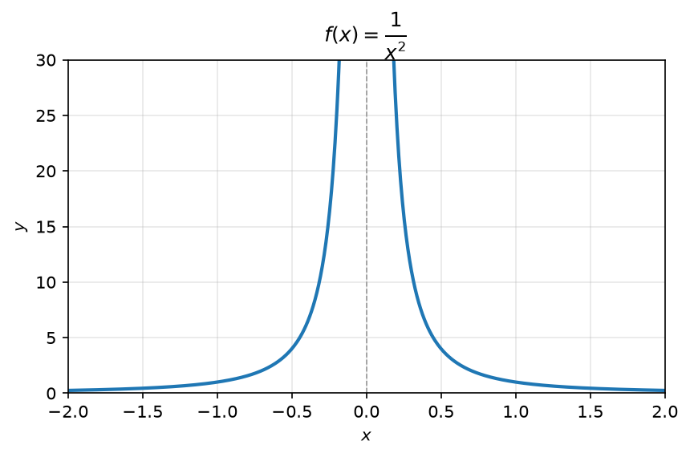
\[\lim_{x \to x_0} f(x) = -\infty \qquad (2)\]
אם לכל \(M < 0\) , קיימת \(\delta > 0\) , כך שלכל \(x\) עבורו \(0 < |x - x_0| < \delta\) מתקיים \(f(x) < M\) .
\[\lim_{x \to \infty} f(x) = L \qquad (3)\]
לכל \(\varepsilon > 0\) , קיים \(a\) כך שלכל \(x\) עבורו \(x > a\) מתקיים \(|f(x) - L| < \varepsilon\)
לדוגמא: \(f(x) = \arctan\)
תרשים: \(f(x)=\arctan x\) — אסימפטוטה אופקית בגובה \(\frac{\pi}{2}\)

\[\lim_{x \to \infty} f(x) = \infty \qquad (4)\]
לכל \(M > 0\) , קיים \(a\) עבורו לכל \(x > a\) : \(f(x) > M\)
לדוגמא: \(f(x) = x^2\)
תרשים: \(f(x)=x^2\) — שואפת לאינסוף, עם סימוני \(M_1\), \(M_2\) על ציר ה-\(y\)

גבולות לא סופיים של פונקציות
\[\lim_{x \to x_0} f(x) = \infty \tag{1}\]
אם לכל \(M > 0\), קיימת \(\delta > 0\), כך שלכל \(x\) עבורו \(0 < |x - x_0| < \delta\) מתקיים \(f(x) > M\).
תרשים: \(f(x)=\frac{1}{x^2}\) — אסימפטוטה אנכית ב-\(x=0\)
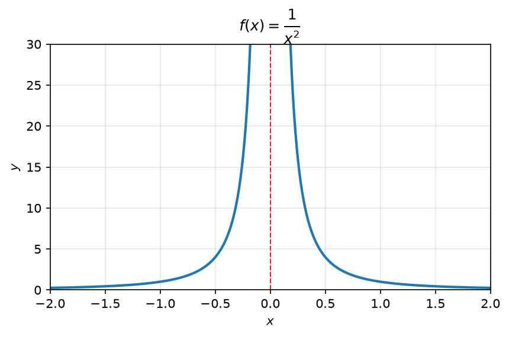
לדוגמא: \(f(x) = \frac{1}{x^2}\)
\[\lim_{x \to x_0} f(x) = -\infty \tag{2}\]
אם לכל \(M < 0\), קיימת \(\delta > 0\), כך שלכל \(x\) עבורו \(0 < |x - x_0| < \delta\) מתקיים \(f(x) < M\).
\[\lim_{x \to \infty} f(x) = L \tag{3}\]
לכל \(\varepsilon > 0\), קיים \(a\) כך שלכל \(x\) עבורו \(x > a\) מתקיים \(|f(x) - L| < \varepsilon\)
תרשים: \(f(x)=\arctan x\) — אסימפטוטה אופקית בגובה \(\frac{\pi}{2}\)
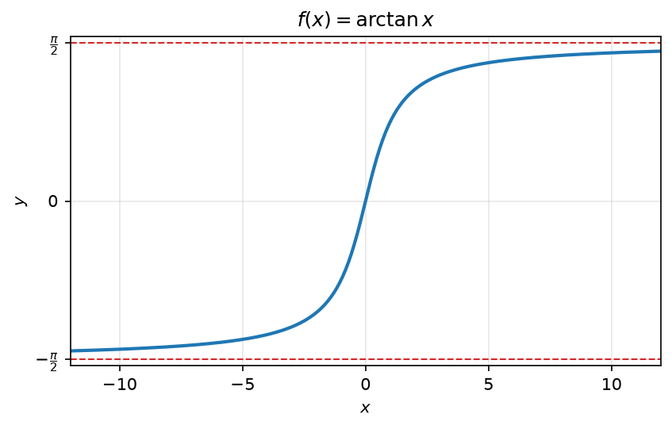
לדוגמא: \(f(x) = \arctan\)
\[\lim_{x \to \infty} f(x) = \infty \tag{4}\]
לכל \(M > 0\), קיים \(a\) עבורו לכל \(x > a\) : \(f(x) > M\)
תרשים: \(f(x)=x^2\) — שואפת לאינסוף, עם הסימונים \(M_1\), \(M_2\) על ציר ה-\(y\)
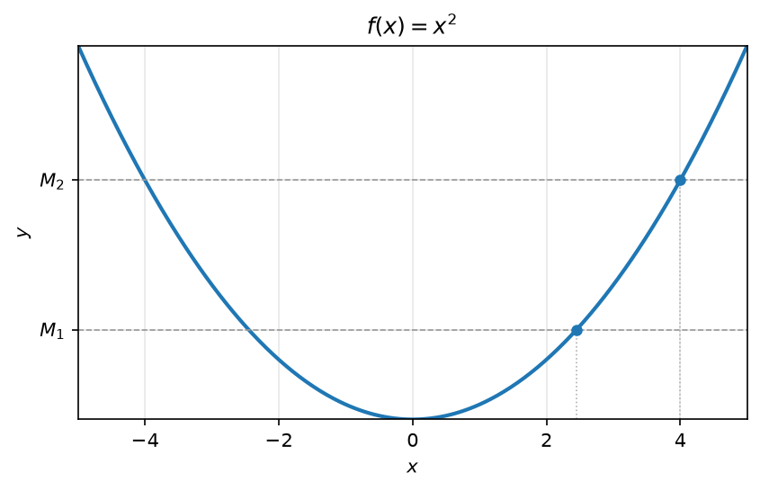
לדוגמא: \(f(x) = x^2\)
האחד מבל האפשרויות של גבולות לא סופיים
\[\lim_{x \to \square} f(x) = \square\]
(החץ העליון: \(-\infty / L / \infty\); החץ התחתון: \(-\infty / \infty / x_0 / x_0^+ / x_0^-\))
נכון תמיד לכל סוגי הגבולות:
משפט היינה
כלומר: עבור \(\displaystyle \lim_{x \to \square} f(x) = \square\)
לכל סדרה \(a_n \to \square\) (אדום)
מתקיים \(f(a_n) \to \square\)
כללי האריתמטיקה במובן הרחב
כלומר: אם \(\displaystyle \lim_{x \to \square} f(x) = L_1\) , \(\displaystyle \lim_{x \to \square} f(x) = L_2\)
אז \(\displaystyle \lim_{x \to \square} f(x) \overset{\cdot}{\underset{\cdot}{:}} g(x) = L_1 \overset{\cdot}{\underset{\cdot}{:}} L_2\)
דוגמאות:
- \(\infty + \infty = \infty\)
- \(\infty \cdot \infty = \infty\)
- \(\infty \cdot \infty\) (מסומן בקו אדום)
- \(\frac{\infty}{\infty}\) (מחוק)
- \(-\infty - \infty = -\infty\)
- \(-\infty \cdot \infty = -\infty\)
- \(\infty + L = \infty\)
- \(\infty \cdot L = \infty\) (\(L > 0\))
- \(\infty \cdot L = -\infty\) (\(L < 0\))
- \(-\infty + L = -\infty\)
- \(-\infty \cdot L = -\infty\) (\(L > 0\))
- \(-\infty \cdot L = \infty\) (\(L < 0\))
\(\frac{1}{\infty} = 0\)
\(\frac{1}{-\infty} = 0\)
\(\frac{1}{0} = \infty\) (חיובי)
\(\frac{1}{0} = -\infty\) (שלילי)
\(\displaystyle \lim_{x \to \infty} \frac{1}{x} = 0\)
\(\displaystyle \lim_{x \to 0^+} \frac{1}{x} = \infty\)
\(\displaystyle \lim_{x \to 0^-} \frac{1}{x} = -\infty\)
\(\displaystyle \lim_{x \to 0} \frac{1}{x}\) (מחוק)
גבולות חד צדדיים
כלומר: \(\displaystyle \lim_{x \to x_0^-} f(x) = \square\)
\[\lim_{x \to x_0^-} f(x) = \square = \lim_{x \to x_0^+} f(x)\]
דוגמאות:
- \(\displaystyle \lim_{x \to \infty} x = \infty\)
- \(\displaystyle \lim_{x \to \infty} (x^2 + 2x) = \infty\)
- \(\displaystyle \lim_{x \to \infty} (x^2 - 2x) = \infty\)
(עבור הדוגמא האחרונה: \(\underbrace{x^2}_{\to \infty} \left(1 - \underbrace{\frac{2}{x}}_{\to 1}\right)\))
- \(\displaystyle \lim_{x \to \infty} \sin(x)\): לא קיים
(בעזרת משפט היינה)
\[a_n = \frac{\pi}{2} + 2 \cdot \pi \cdot n \to \infty\]
\[\sin(a_n) = 1 \to 1\]